使い方の手順
空のプロジェクトから「機器と、機器ごとのアラームを管理するアプリ」を作り、コードとして書き出すまでを 1 手ずつ説明します。かかる時間はおよそ 15 分です。
0画面の見方
起動すると題材（機器の設定＆モニタリング）が開きます。下の図はフロービューとプレビューを並べたところです。

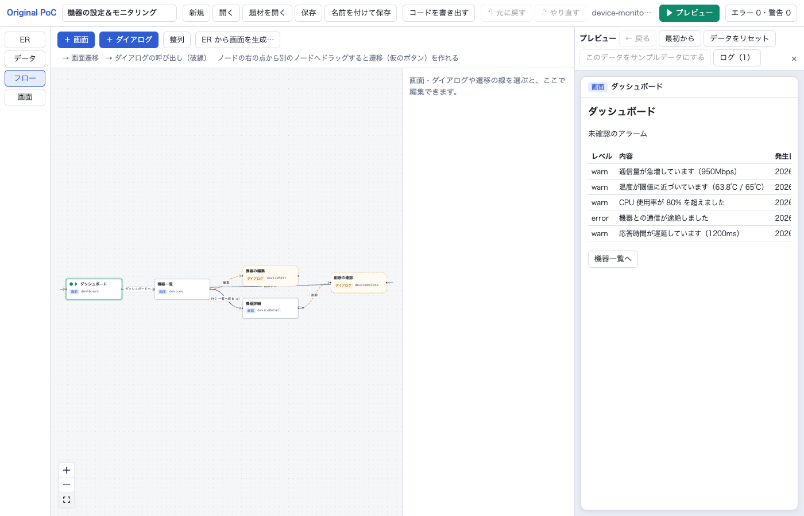
| 場所 | 中身 |
|---|---|
| 上のヘッダー | プロジェクト名、新規・開く・題材を開く・保存・名前を付けて保存、コードを書き出す、元に戻す／やり直す、▶ プレビュー、検証の件数 |
| ヘッダーの下 | お知らせ（操作の結果やエラー）。右の × で閉じる |
| 左の縦の切り替え | ER・データ・フロー・画面 の 4 つのビュー |
| 右（開いたとき） | プレビュー。作っているアプリを動かす。どのビューとも並べて使える |
1新しいプロジェクトを作る
- ヘッダーの 「新規」 を押す（保存していない変更があれば、消してよいか確かめられます）。
- ヘッダー左の名前欄に
機器の管理と入れて Enter。
2ER: データの形を決める
左の ER を押します。
2-1. エンティティ「機器」を作る
- 「＋ エンティティ」 を押す。右のパネルに新しいエンティティが出ます。
- パネルの 名前 に
機器、id にDeviceと入れる（id はコードの名前になるので英字）。 -
「＋ 属性」 で属性を足し、各行に id・名前・型を入れる:
name・名前・文字列・必須 にチェックstatus・状態・列挙。下の欄に値をonline, offlineのようにカンマ区切りで入れる
- 表示用 で「名前（name）」を選ぶ（一覧や選択肢でレコードを表す項目）。

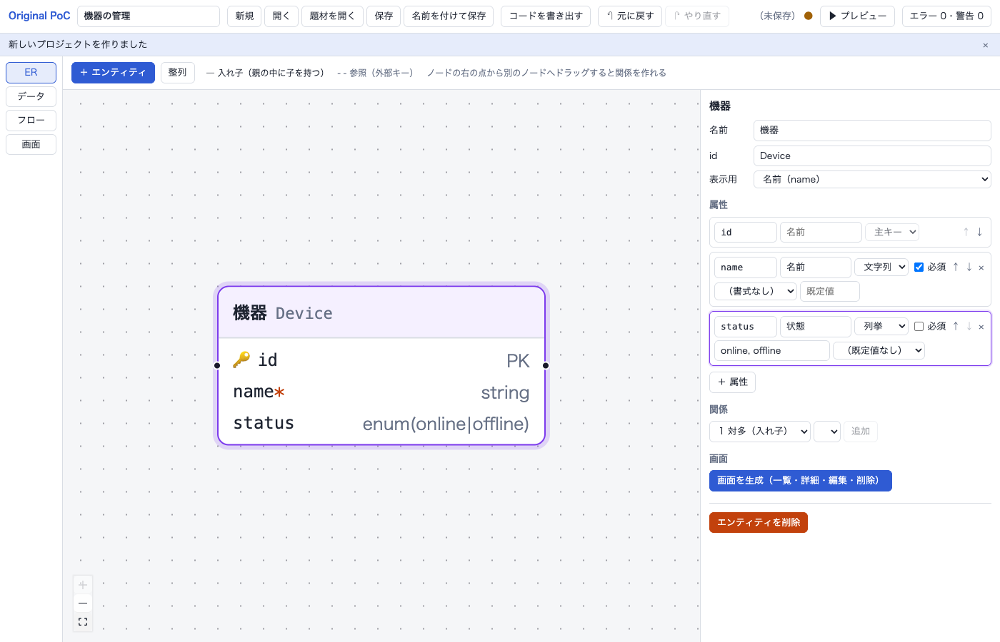
id 属性（主キー）は自動で付く。属性の行の ↑↓ で並べ替え、× で消す2-2. エンティティ「アラーム」を作り、機器の中に入れる
-
同じように 「＋ エンティティ」 で
アラーム（Alarm）を作る:level・レベル・列挙（info, warn, error）・必須message・内容・文字列・必須- 表示用は「内容（message）」
- ER 図で 機器 のノードを押して選ぶ。
- パネルの 関係 で「1 対多（入れ子）」と「アラーム（Alarm）」を選び、「追加」。
機器に alarms 属性ができ、図に線が引かれます（機器 1 件の中にアラームが 0 件以上ある）。

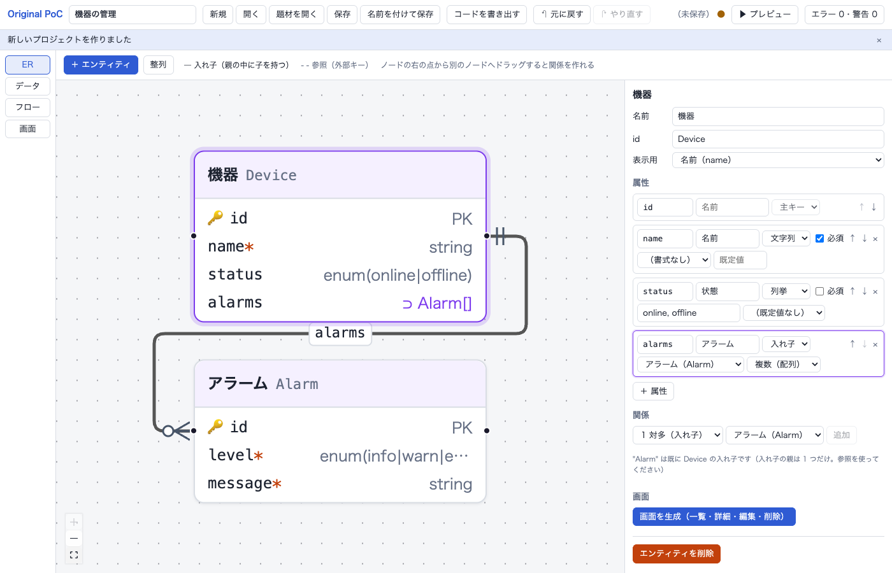
| 関係の種類 | 意味 | 図の線 |
|---|---|---|
| 1 対多（入れ子） | 親の中に子を複数持つ（親を消すと子も消える） | 実線 |
| 1 対 1（入れ子） | 親の中に子を 1 つ持つ | 実線 |
| 多対 1（参照） | 別のエンティティを id で指す（外部キー） | 破線 |
ノードが重なったら、ツールバーの「整列」で並べ直します。
3データ: サンプルデータを作る
左の データ を押します。
- 「サンプルデータを生成…」 を押す。
- 件数を入れる（例: 機器 5、アラーム 12。入れ子のアラームは全部の機器の合計）。シードを変えると別の値になる。
- 「生成して置き換える」。

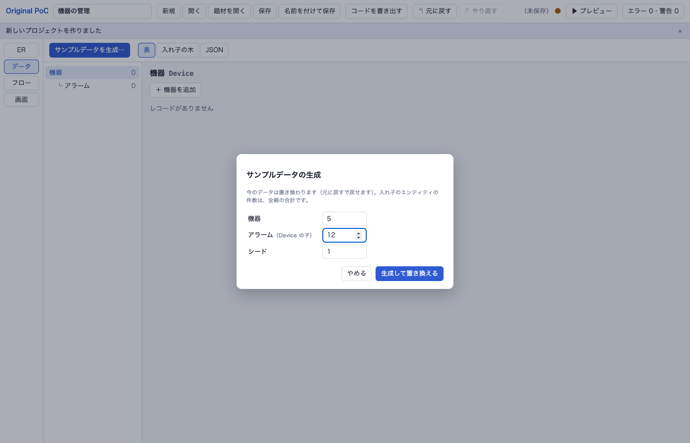
左のエンティティを選ぶと表が出ます。セルは直接書き換えられます。行の追加は「＋ 機器を追加」、削除は行の「削除」（入れ子のアラームも一緒に消える）。

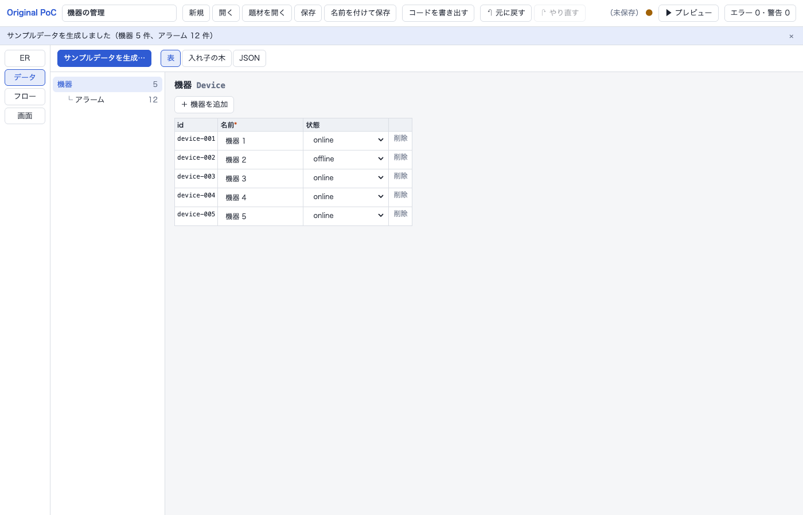
4画面を生成する
- 左の ER に戻り、機器 を選ぶ。
- パネルの 「画面を生成（一覧・詳細・編集・削除）」 を押す。機器一覧・機器詳細・機器の編集（ダイアログ）・機器の削除（確認ダイアログ）と、その間の遷移ができる。
- アラーム を選んで、同じく 「画面を生成」。アラームの画面ができ、機器詳細に「アラームを追加」ボタンが付く。

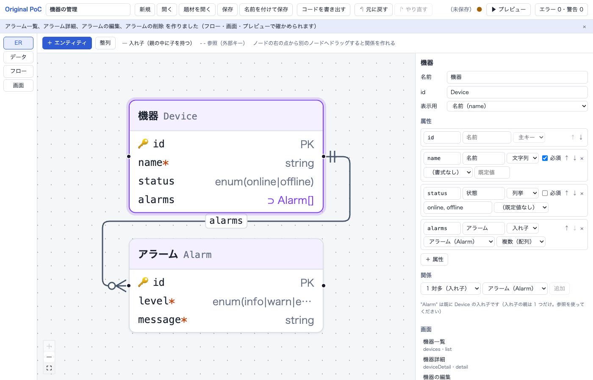
5フロー: 画面のつながりを見る・足す
左の フロー を押し、「整列」 で全体を並べます。
| 図の要素 | 意味 |
|---|---|
| 四角 | 画面（▶ が付いているのが最初の画面） |
| 角の丸い破線の枠 | ダイアログ |
| 実線 | 画面の遷移 |
| 破線 | ダイアログを開く |
| 点線 | ダイアログを閉じたあとの遷移 |
| 線のラベル | 何を押すと移るか（ボタンの文言・行クリック） |
遷移を足す
例: 機器詳細からアラーム一覧へ移るボタンを作ります。
- 機器詳細 のノードの右の点から、アラーム一覧 のノードへドラッグする。
- 遷移ができ、機器詳細に 仮のボタン「アラーム一覧へ」が置かれる。右のパネルにその遷移が出る。

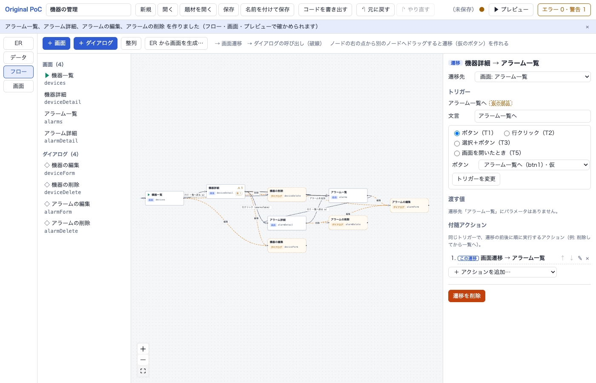
遷移のパネルでは次を変えられます。
- 遷移先
- トリガー: ボタン（T1）・行クリック（T2）・選択＋ボタン（T3）・画面を開いたとき（T5）
- 文言: ボタンの文字
- 渡す値: 遷移先のパラメータ（例: 機器の id）
- 付随アクション: 同じボタンで、遷移の前後にする処理（例: 削除してから一覧へ）
- 遷移を削除
画面やダイアログを手で作るときは「＋ 画面」「＋ ダイアログ」。
検証の警告を見る
仮のボタンのままの遷移は 警告 になり、ヘッダー右の件数が「警告 1」になります。件数を押すと下に検証の結果が出ます。行を押すと、問題の場所を開きます。

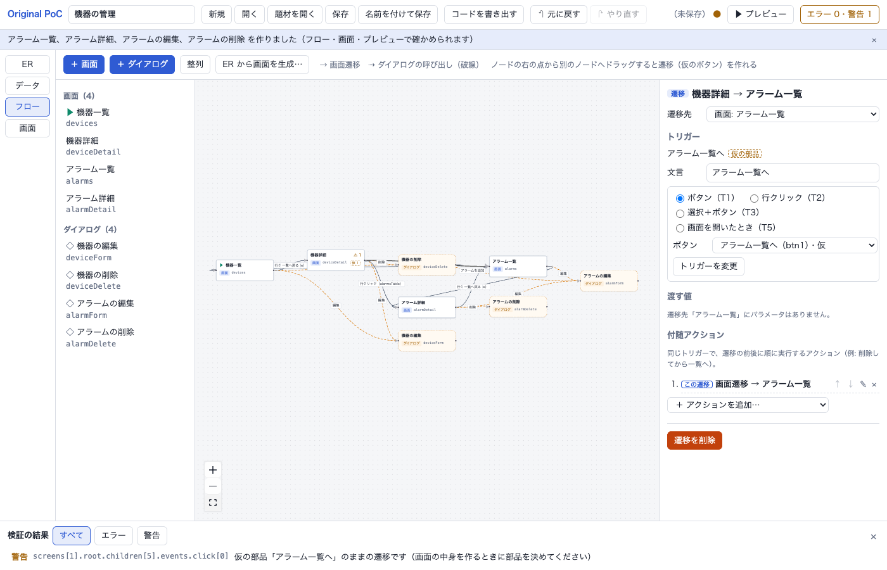
6画面: 中身を直す
左の 画面 を押し、一覧から 機器詳細 を選びます。
| 列 | 中身 |
|---|---|
| 中身（ノードの木） | 画面の部品の入れ子。橙の「仮」は仮の部品 |
| 部品のパネル（真ん中） | 選んだ部品の文言・見た目・表示条件・遷移・イベントのアクション |
| この画面のプレビュー | この画面だけを動かす。上の選択で見本のレコードを変える |
上の「役割」と「エンティティ」を選んで「テンプレートを適用」すると、中身を作り直せます（仮の部品は残る）。
6-1. 部品を足す
- 中身の木で
toolbar（ボタンの並び）を押して選ぶ。 - 「＋ 部品を追加…」 から Button を選ぶ。選んだ Box の中に足される。
- パネルの 文言 に
全アラームを見ると入れて Enter。
パネル右上の ↑↓ で並べ替え、× で消します。
6-2. データを表示する（バインディング）
- 中身の木で
pageを選び、「＋ 部品を追加…」 から Text を足す。 - 文言に
アラーム件数: {{ (record?.alarms ?? []).length }}と入れて Enter。
{{ }} の中は式です。欄に入力すると、その画面で使える名前の候補（record?.name、params.deviceId など）が出ます。右の「この画面のプレビュー」にすぐ反映されます。

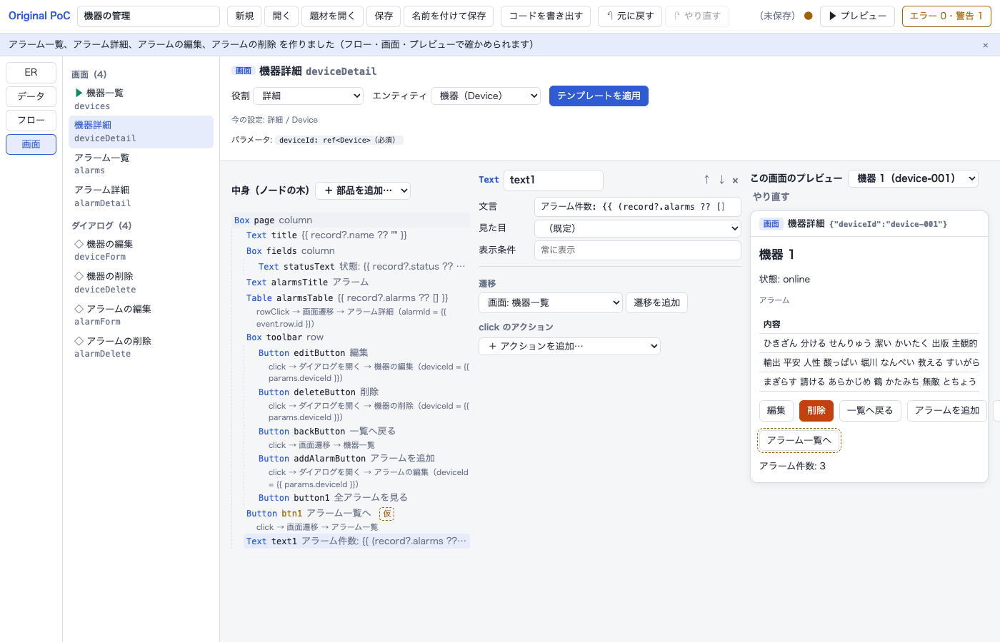
| 式で使える名前の例 | 中身 |
|---|---|
record | この画面で開いているレコード（詳細・フォーム） |
params | 画面に渡された値（params.deviceId） |
data.Device | 機器の全レコード |
draft | フォームで入力中の値 |
row | 表の列の中の、その行のレコード |
record?.name のように ?. を付けます。付けないと、書き出したコードの型の検査で引っかかります。
6-3. 仮のボタンの遷移を、足したボタンに移す
- 中身の木で、足したボタン（
button1）を選ぶ。 - パネルの 遷移 に「仮の部品の遷移」が出る。「この部品に移す」 を押す。
仮のボタン「アラーム一覧へ」が消え、足したボタンで移るようになります。警告も 0 になります。

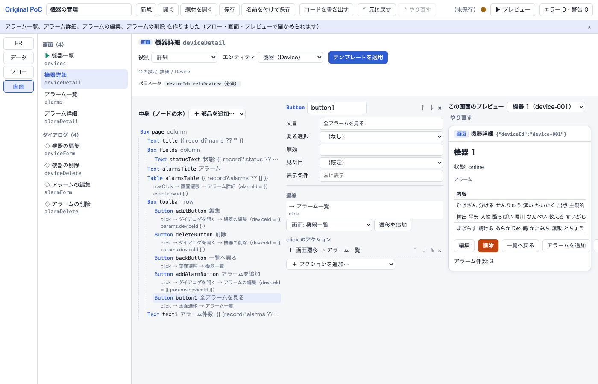
7プレビュー: 動かして確かめる
ヘッダーの 「▶ プレビュー」 を押すと、最初の画面（機器一覧）から動きます。フロー図と並べると、今いる画面が緑の枠で、たどった遷移が緑の線で光ります。

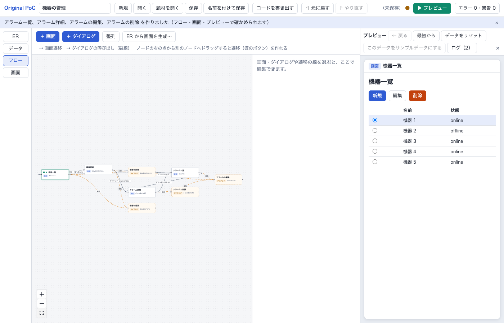
試すこと:
- 行のラジオで機器を選び 「編集」 → 名前を変えて 「保存」 → 一覧に反映される
- 行を押す → 機器詳細。「全アラームを見る」 → アラーム一覧。「← 戻る」 で戻る
- 詳細で 「アラームを追加」 → 入れて保存 → 件数が増える
- 詳細で 「削除」 → 確認で 「削除する」 → 一覧に戻る（アラームも消える）

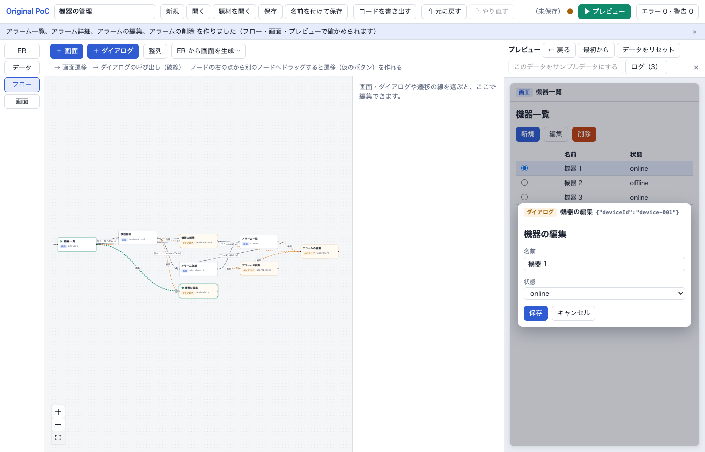
| ボタン | はたらき |
|---|---|
| ← 戻る | 前の画面へ（ダイアログが開いていれば閉じる） |
| 最初から | 最初の画面からやり直す |
| データをリセット | プレビューで変えたデータを、元のサンプルデータに戻す |
| このデータをサンプルデータにする | プレビューで変えたデータを、プロジェクトのサンプルデータにする |
| ログ | 実行したアクションとデータの変化 |
プレビューで変えたデータは、サンプルデータを書き換えません（「このデータをサンプルデータにする」を押したときだけ）。
8保存する・開く
- 保存（Cmd/Ctrl + S）: 保存先を選んで
*.poc.jsonに保存する。最初の名前はproject.poc.json。書き出すアプリの名前はこのファイル名から作るので、device-admin.poc.jsonのような英字の名前にするとよい。2 回目からは同じファイルに上書きする。 - 名前を付けて保存（Shift + Cmd/Ctrl + S）: 別のファイルに保存する。
- 開く:
*.poc.jsonを開く。 - 題材を開く: 見本のプロジェクト（機器の設定＆モニタリング）を開く。
ヘッダーの「（未保存）●」は、ファイルに保存していない変更があるしるしです。
9コードを書き出す
-
ヘッダーの 「コードを書き出す」 を押す。
- Chrome / Edge: 書き出すフォルダを選ぶ。リポジトリの外に空のフォルダを作って選ぶとよい。
- それ以外のブラウザ: zip がダウンロードされるので展開する。
- 検証のエラーや式の誤りがあると、場所付きの理由がお知らせに出て、書き出さない。
- 書き出したフォルダで:
pnpm install
pnpm dev # http://localhost:5181/プレビューと同じように動くアプリ（Vite + React + TypeScript）が開きます。pnpm build で型の検査とビルドをします。中身の説明は、書き出したフォルダの README.md にあります。
10困ったとき
| 症状 | 対処 |
|---|---|
| 操作を間違えた | 元に戻す（Cmd/Ctrl + Z） |
| 図のノードが重なって見にくい | 「整列」。図の左下の ⛶ で全体が入るように合わせる |
| 「部品を追加」した場所が思ったのと違う | 先に入れたい Box を選ぶ。Box 以外を選んでいると、その後ろに足される |
| プレビューが思った画面から始まらない | フローで画面を選び、パネルの「最初の画面にする」を押す |
| プレビューで「〜は削除されました」と出る | 「最初から」を押す |
| プレビューの文言に ⚠ が出る | 式の誤り。⚠ にポインタを当てると理由が出る。画面ビューでその部品の式を直す |
| 「コードを書き出す」でエラー | お知らせの場所（例: 画面 deviceDetail / page / title / props: …）の式や部品を直す |
| ポート 5180 が使われている | lsof -nP -iTCP:5180 -sTCP:LISTEN で PID を調べて kill <PID> |
起動の問題は はじめかた、ビューごとの細かい操作は エディタの README。
スクリーンショットは pnpm --filter @ui-editor/poc-app guide:shots で撮り直せます（この手順と同じ操作をします）。